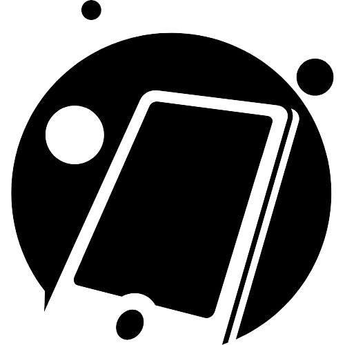

Selamat datang di LAPUA PHONE
LAPUA PHONE berdiri untuk masyarakat yang ingin memiliki ponsel pintar (smartphone) yang murah dan mudah di beli oleh masyarakat menengah kebawah. LAPUA PHONE juga selalu memberikan diskon pada event-event tertentu. Jadi tunggu apa lagi ayo beli di LAPUA PHONE sekarang juga!